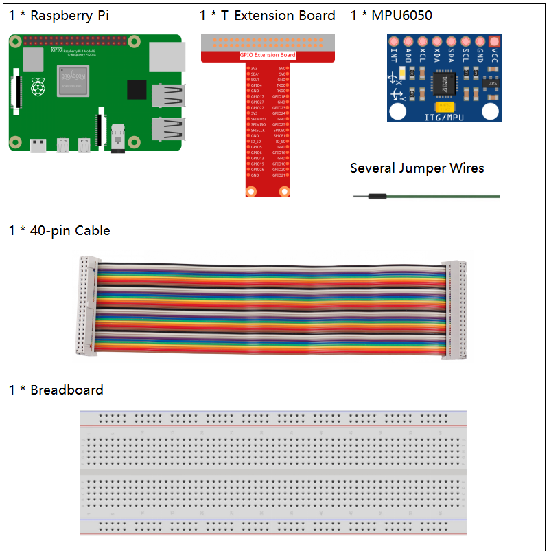

Bemerkung
Hallo und willkommen in der SunFounder Raspberry Pi & Arduino & ESP32 Enthusiasten-Gemeinschaft auf Facebook! Tauchen Sie tiefer ein in die Welt von Raspberry Pi, Arduino und ESP32 mit anderen Enthusiasten.
Warum beitreten?
Expertenunterstützung: Lösen Sie Nachverkaufsprobleme und technische Herausforderungen mit Hilfe unserer Gemeinschaft und unseres Teams.
Lernen & Teilen: Tauschen Sie Tipps und Anleitungen aus, um Ihre Fähigkeiten zu verbessern.
Exklusive Vorschauen: Erhalten Sie frühzeitigen Zugang zu neuen Produktankündigungen und exklusiven Einblicken.
Spezialrabatte: Genießen Sie exklusive Rabatte auf unsere neuesten Produkte.
Festliche Aktionen und Gewinnspiele: Nehmen Sie an Gewinnspielen und Feiertagsaktionen teil.
üëâ Sind Sie bereit, mit uns zu erkunden und zu erschaffen? Klicken Sie auf [hier] und treten Sie heute bei!
2.2.6 MPU6050-Modul
Einführung
Das MPU-6050 ist das weltweit erste und einzige 6-Achsen-Bewegungserfassungsgerät (3-Achsen-Gyroskop und 3-Achsen-Beschleunigungssensor) und wurde für Smartphones, Tablets und tragbare Sensoren entwickelt, die diese Funktionen benötigen, einschließlich geringem Energieverbrauch, geringen Kosten und hoher Leistung.
In diesem Experiment verwenden wir I2C, um die Werte des Dreiachsen- Beschleunigungssensors und des Dreiachsen-Gyroskops für das MPU6050 zu erhalten und sie auf dem Bildschirm anzuzeigen.
Benötigte Komponenten
Für dieses Projekt benötigen wir die folgenden Komponenten.
Schaltplan
Das MPU6050 kommuniziert über die I2C-Bus-Schnittstelle mit dem Mikrocontroller. Die SDA1- und SCL1-Pins müssen mit den entsprechenden Pins verbunden werden.

Experimentelle Verfahren
Schritt 1: Bauen Sie den Schaltkreis auf.

Schritt 2: I2C einrichten (siehe Anhang I2C configuration. Wenn Sie I2C bereits eingerichtet haben, überspringen Sie diesen Schritt.)
Schritt 3: Wechseln Sie in den Ordner des Codes.
cd ~/davinci-kit-for-raspberry-pi/python-pi5
Schritt 4: Führen Sie die ausführbare Datei aus.
sudo python3 2.2.6_mpu6050_zero.py
Wenn der Code ausgeführt wird, erfasst das MPU6050-Modul den Ablenkwinkel der x-Achse und y-Achse sowie die Beschleunigung und Winkelgeschwindigkeit auf jeder Achse und zeigt sie auf dem Bildschirm an, nachdem sie berechnet wurden.
Bemerkung
Wenn Sie den Fehler
FileNotFoundError: [Errno 2] No such file or directory: '/dev/i2c-1'erhalten, beziehen Sie sich bitte auf I2C configuration, um das I2C zu aktivieren.Wenn der Fehler
ModuleNotFoundError: No module named 'smbus2'auftritt, führen Sie bittesudo pip3 install smbus2aus.Wenn der Fehler
OSError: [Errno 121] Remote I/O errorauftritt, bedeutet dies, dass das Modul falsch verdrahtet ist oder das Modul defekt ist.
Warnung
Wenn die Fehlermeldung RuntimeError: Cannot determine SOC peripheral base address angezeigt wird, lesen Sie bitte Wenn gpiozero nicht funktioniert.
Code
Bemerkung
Sie können den unten stehenden Code Modifizieren/Zurücksetzen/Kopieren/Ausführen/Stoppen. Aber bevor Sie das tun, müssen Sie zum Quellcode-Pfad wie davinci-kit-for-raspberry-pi/python-pi5 gehen. Nachdem Sie den Code geändert haben, können Sie ihn direkt ausführen, um die Auswirkungen zu sehen.
import smbus
import math
import time
# Power-Management-Register
power_mgmt_1 = 0x6b
power_mgmt_2 = 0x6c
def read_byte(adr):
return bus.read_byte_data(address, adr)
def read_word(adr):
high = bus.read_byte_data(address, adr)
low = bus.read_byte_data(address, adr+1)
val = (high << 8) + low
return val
def read_word_2c(adr):
val = read_word(adr)
if (val >= 0x8000):
return -((65535 - val) + 1)
else:
return val
def dist(a,b):
return math.sqrt((a*a)+(b*b))
def get_y_rotation(x,y,z):
radians = math.atan2(x, dist(y,z))
return -math.degrees(radians)
def get_x_rotation(x,y,z):
radians = math.atan2(y, dist(x,z))
return math.degrees(radians)
bus = smbus.SMBus(1) # oder bus = smbus.SMBus(1) für Revision 2 Boards
address = 0x68 # Dies ist der Adresswert, der über den Befehl i2cdetect gelesen wurde
# Wecken Sie jetzt das 6050 auf, da es im Schlafmodus startet
bus.write_byte_data(address, power_mgmt_1, 0)
while True:
time.sleep(0.1)
gyro_xout = read_word_2c(0x43)
gyro_yout = read_word_2c(0x45)
gyro_zout = read_word_2c(0x47)
print ("gyro_xout : ", gyro_xout, " skaliert: ", (gyro_xout / 131))
print ("gyro_yout : ", gyro_yout, " skaliert: ", (gyro_yout / 131))
print ("gyro_zout : ", gyro_zout, " skaliert: ", (gyro_zout / 131))
accel_xout = read_word_2c(0x3b)
accel_yout = read_word_2c(0x3d)
accel_zout = read_word_2c(0x3f)
accel_xout_skaliert = accel_xout / 16384.0
accel_yout_skaliert = accel_yout / 16384.0
accel_zout_skaliert = accel_zout / 16384.0
print ("accel_xout: ", accel_xout, " skaliert: ", accel_xout_skaliert)
print ("accel_yout: ", accel_yout, " skaliert: ", accel_yout_skaliert)
print ("accel_zout: ", accel_zout, " skaliert: ", accel_zout_skaliert)
print ("x-Rotation: " , get_x_rotation(accel_xout_skaliert, accel_yout_skaliert, accel_zout_skaliert))
print ("y-Rotation: " , get_y_rotation(accel_xout_skaliert, accel_yout_skaliert, accel_zout_skaliert))
time.sleep(1)
Code-Erklärung
Sensor-Daten von MPU6050 lesen.
def read_word(adr): high = bus.read_byte_data(address, adr) low = bus.read_byte_data(address, adr+1) val = (high << 8) + low return val def read_word_2c(adr): val = read_word(adr) if (val >= 0x8000): return -((65535 - val) + 1) else: return val
Ablenkwinkel der y-Achse berechnen.
def get_y_rotation(x,y,z): radians = math.atan2(x, dist(y,z)) return -math.degrees(radians)
Ablenkwinkel der x-Achse berechnen.
def get_x_rotation(x,y,z): radians = math.atan2(y, dist(x,z)) return math.degrees(radians)
Werte der x-, y- und z-Achse des Gyroskopsensors lesen, Daten in Winkelgeschwindigkeitswerte umrechnen und dann ausgeben.
gyro_xout = read_word_2c(0x43) gyro_yout = read_word_2c(0x45) gyro_zout = read_word_2c(0x47) print ("gyro_xout : ", gyro_xout, " skaliert: ", (gyro_xout / 131)) print ("gyro_yout : ", gyro_yout, " skaliert: ", (gyro_yout / 131)) print ("gyro_zout : ", gyro_zout, " skaliert: ", (gyro_zout / 131))
Werte der x-, y- und z-Achse des Beschleunigungssensors lesen, Elemente in beschleunigte Geschwindigkeitswerte (Gravitationseinheit) umrechnen und ausgeben.
accel_xout = read_word_2c(0x3b) accel_yout = read_word_2c(0x3d) accel_zout = read_word_2c(0x3f) accel_xout_skaliert = accel_xout / 16384.0 accel_yout_skaliert = accel_yout / 16384.0 accel_zout_skaliert = accel_zout / 16384.0 print ("accel_xout: ", accel_xout, " skaliert: ", accel_xout_skaliert) print ("accel_yout: ", accel_yout, " skaliert: ", accel_yout_skaliert) print ("accel_zout: ", accel_zout, " skaliert: ", accel_zout_skaliert)
Ablenkwinkel der x- und y-Achse ausgeben.
print ("x-Rotation: " , get_x_rotation(accel_xout_skaliert, accel_yout_skaliert, accel_zout_skaliert)) print ("y-Rotation: " , get_y_rotation(accel_xout_skaliert, accel_yout_skaliert, accel_zout_skaliert))